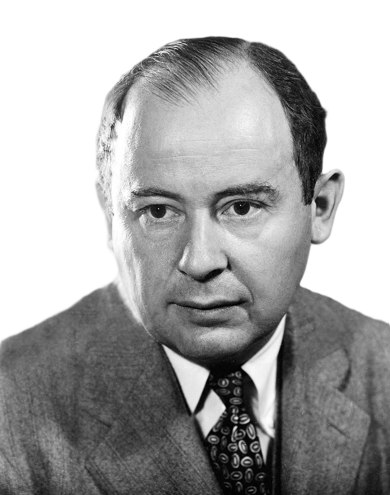
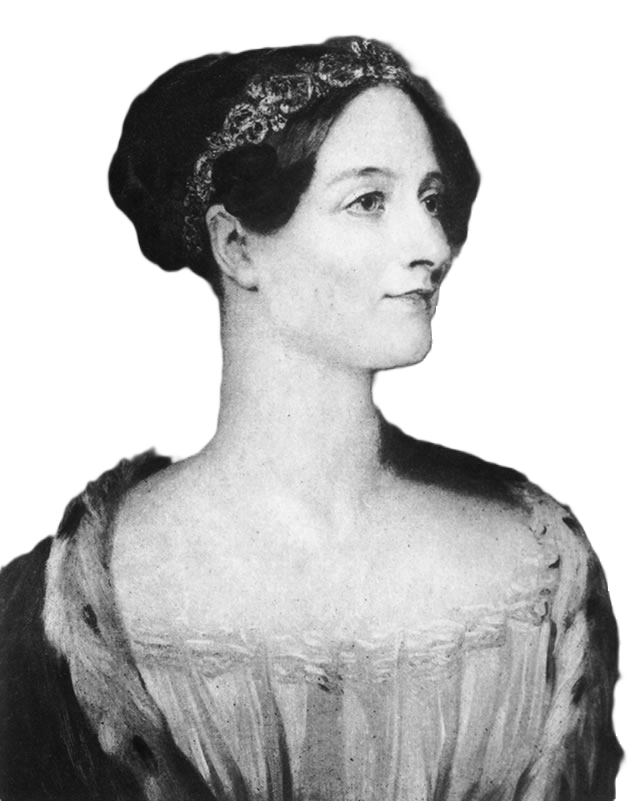

John von Neumann, a apporté des contributions majeures à la théorie des jeux, au calcul et à la conception des ordinateurs, dont l'architecture est encore utilisée dans les ordinateurs modernes. Ada Lovelace, souvent considérée comme la première programmeuse, a écrit des algorithmes pour la machine analytique de Charles Babbage, posant ainsi les bases de la programmation. Grace Hopper, connue pour avoir développé le premier compilateur pour un langage de programmation, est également à l'origine du concept de débogage informatique. Dennis Ritchie et Ken Thompson sont célèbres pour avoir créé le langage de programmation C et le système d'exploitation UNIX, qui ont eu un impact majeur sur le développement des logiciels.


De nos jours, l'informatique et la technologie sont dominées par des entreprises et des entrepreneurs qui ont redéfini la façon dont nous vivons et travaillons. Parmi les figures les plus emblématiques, Elon Musk, fondateur de SpaceX et Tesla, est un visionnaire de l'avenir de l'espace et de l'énergie propre. Mark Zuckerberg, co-fondateur de Facebook, a révolutionné les communications et la façon dont nous interagissons en ligne. Jeff Bezos, fondateur d'Amazon, a transformé la vente au détail et a contribué à faire d'Internet un lieu de commerce mondial. Tim Cook, PDG d'Apple, a maintenu l'entreprise à la pointe de l'innovation et du design. Sundar Pichai, PDG de Google, continue de faire avancer l'intelligence artificielle et la recherche en ligne. Satya Nadella, PDG de Microsoft, a recentré l'entreprise sur le cloud computing et les services. Jack Dorsey, co-fondateur de Twitter et PDG de Square, a façonné le paysage des médias sociaux et des paiements en ligne. Enfin, Larry Page et Sergey Brin, co-fondateurs de Google, ont établi la société comme un leader de la recherche en ligne et de la technologie. Ces personnalités continuent de façonner l'avenir de la technologie et ont un impact profond sur notre monde moderne.
Les algorithmes sont des règles ou des instructions précises qui sont conçues pour résoudre des problèmes ou accomplir des tâches spécifiques. Ils sont utilisés dans de nombreux domaines, y compris les mathématiques, l'informatique, l'ingénierie, et même dans la vie quotidienne. Les algorithmes servent souvent à automatiser des tâches répétitives, à résoudre des problèmes de manière plus efficace, ou à prendre des décisions basées sur des règles spécifiques. Ils peuvent être représentés sous forme de schémas, de pseudo-code, ou de code informatique. Les algorithmes peuvent être simples ou complexes, en fonction de la nature du problème à résoudre. Ils sont également utilisés dans les sciences sociales, la biologie, et d'autres domaines pour analyser des données et résoudre des problèmes complexes.